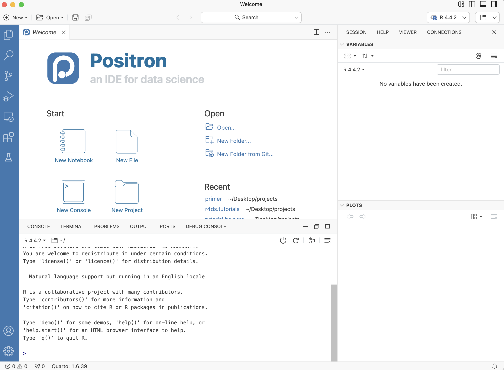
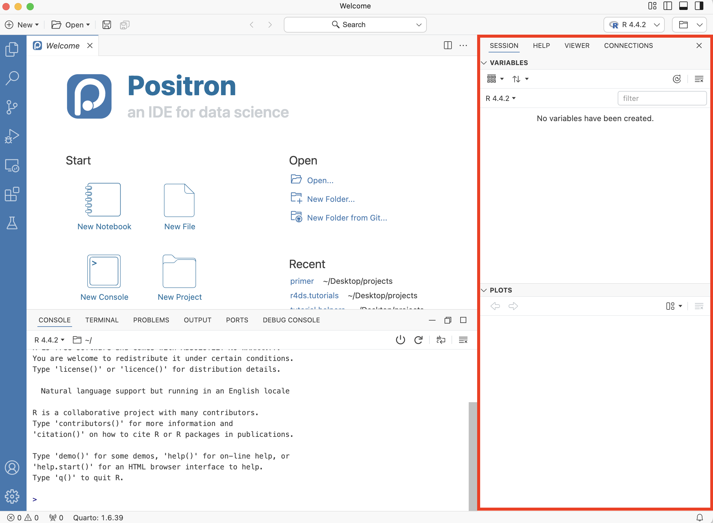
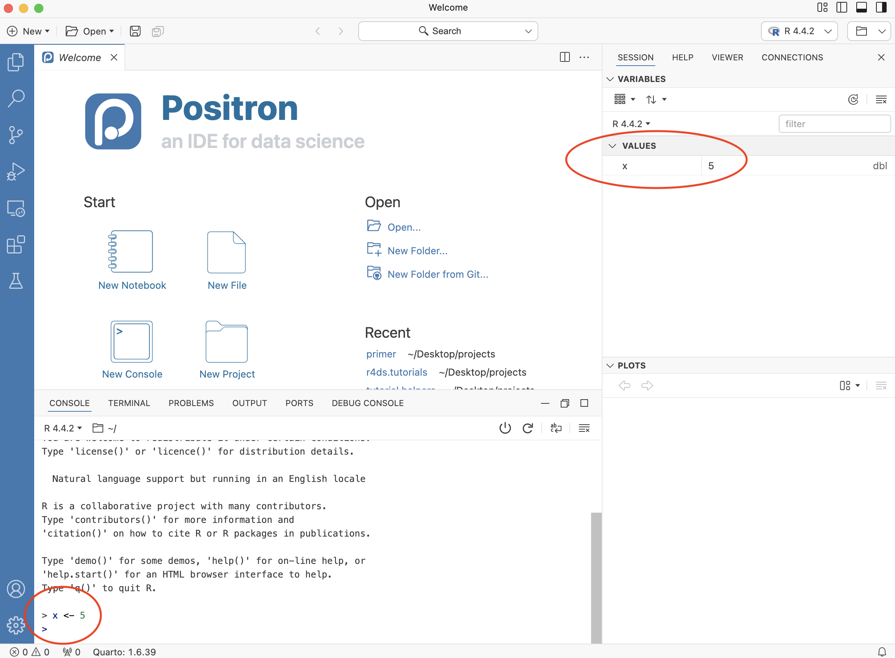
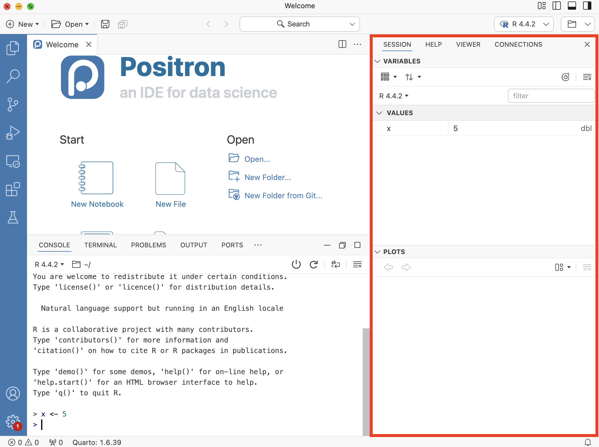
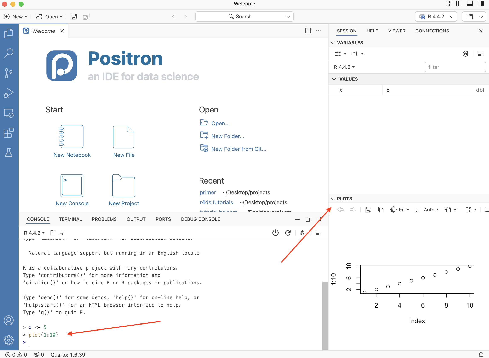
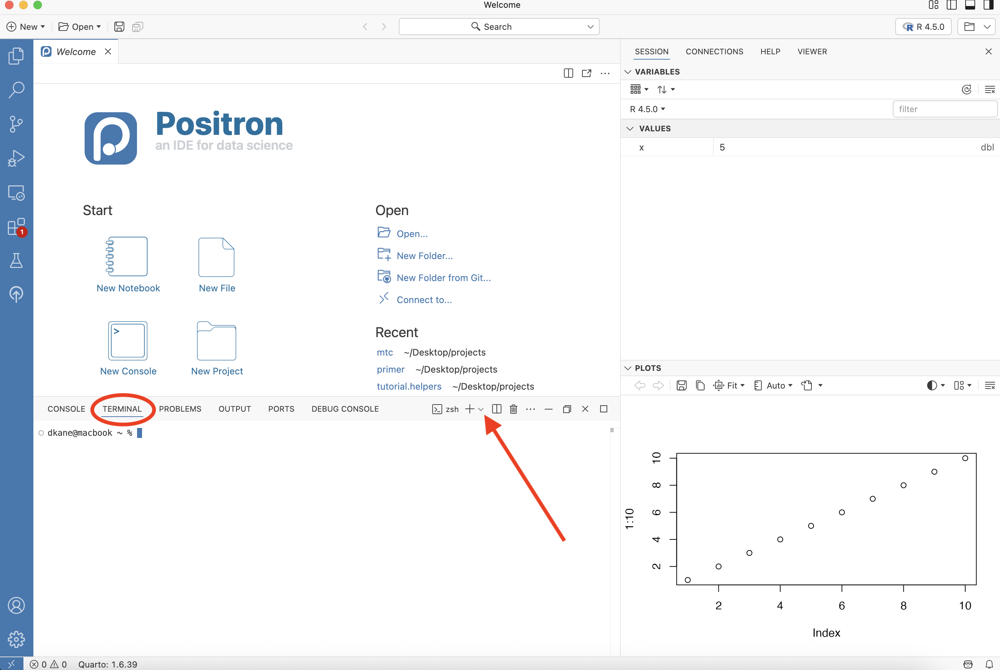
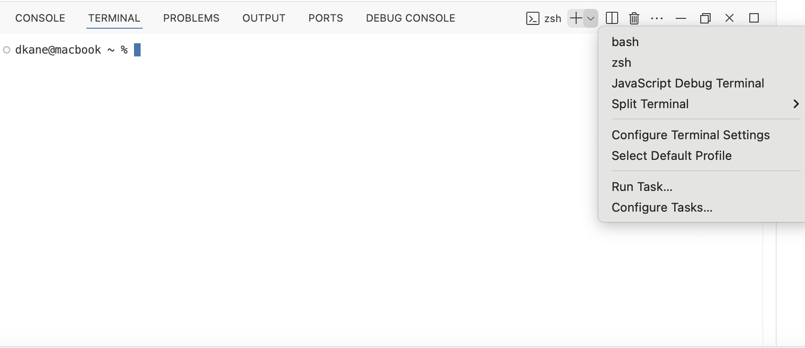
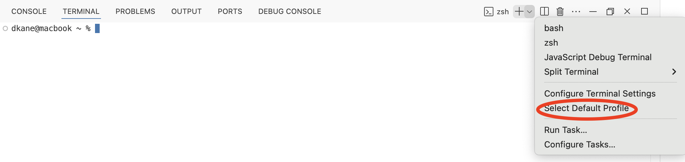
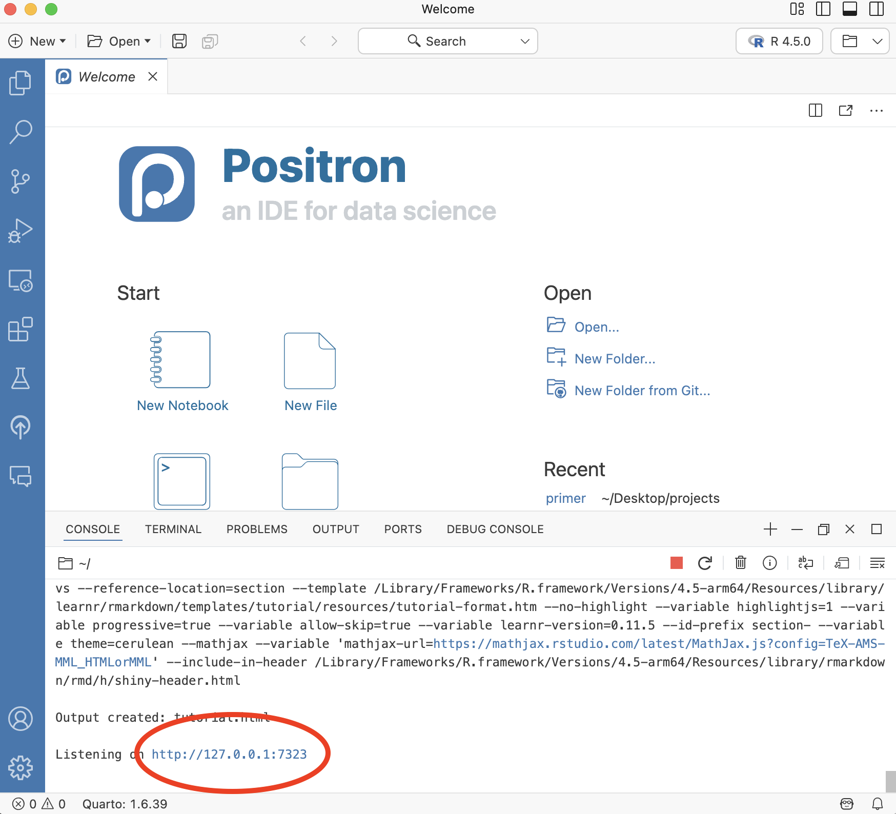
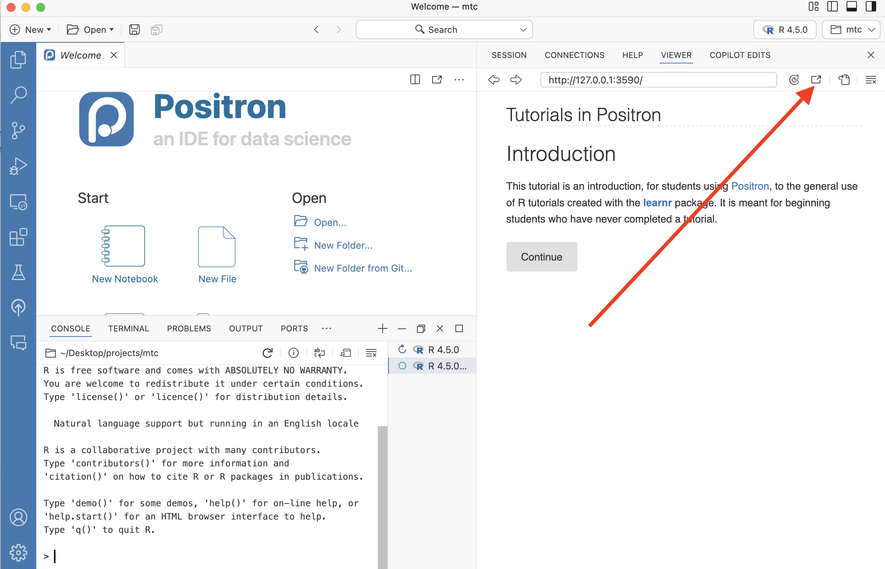

Getting Started
You can never look at the data too much. – Mark Engerman
The world confronts us. Make decisions we must.
Installing R and Positron
We use R via Positron. R is to Positron as a car’s engine is to its dashboard.
More precisely, R is a programming languages that runs computations, while Positron is an integrated development environment (IDE) that provides an interface with many convenient features. Just as having access to a speedometer and navigation system makes driving much easier, using Positron’s interface makes working with R and Python much easier.
Download and install R and Positron on your computer.
Download and install R. If you are using a Mac, make sure to use the correct installation, depending on whether you are using newer “Apple silicon (M1,2,..) Mac” (first option) or “older Intel Macs” (second option). You can look up the chip used in your Mac by checking “About This Mac” under the Apple menu.
Download and install Positron. If using a Mac, figure out if you should use the “arm64” (which is for the newer Macs) or “x64” version. If your Mac is not too old, you want “arm64.” Avoid the universal installer.
If you are using Windows, you must also do two things:
- Install Git for Windows.
- Install RTools. See here for the latest version. Currently, the Rtools45 installer is what you want, assuming that your installed R version is at least 4.5.0. The link is in the seventh paragraph of this page. Use your favorite AI to help determine whether to use the Rtools45 installer or 64-bit ARM Rtools45 installer. Again, this is not required, but if you have problems installing packages later in this chapter, you must install RTools. If not, you are all set.
The Console
Much as we don’t drive a car by interacting directly with the engine but rather by interacting with elements of the car’s dashboard, we won’t be using R directly. Instead, we will work through Positron’s interface. After you install R and Positron on your computer, you’ll have two new programs (also called applications) you can open. Always work in Positron, not directly in the R application.
Open up Positron.
Look at the Console tab in the Panel at the lower left. At start up, the Console gives you some information about your version of R. The Console is where you can type and run R code. For example, if you type 1 + 1 and hit enter (on Windows) or return (on Mac), the Console returns 2.
We often use the phrase “run the following code.” This means that you should type or copy-and-paste the code into the Console and then hit the Enter key. (Note that return is the name of a Mac key and enter the name of the corresponding Windows key. We use Enter throughout the Primer to refer to both.)
The right side of the Positron window is the Secondary Side Bar.

In the Session tab, there is a Variables listing for the current R session. There are no variables yet. Let’s change that. Go to your Console and type:
x <- 5This code assigns the value 5 to an object, x. <- is the operator used to assign values to objects in R. Now, hit Enter and you should see a variable x equal to 5 under Values. You must always hit Enter after typing a command, otherwise Positron will not realize that you want R to execute the command.

The Secondary Side Bar contains different tabs in the top half and a display area for plots in the bottom half.

In the Console, type plot(1:10) and hit Enter.

The far left of the Positron window is the Activity Bar. The area in which the Welcome screen is currently located is the Editor. Once you start writing code, the Editor is the location in which your files will appear.
The Terminal
The Console is where we talk to R. The Terminal is where we talk to the computer. The Console behaves almost identically regardless of the kind of computer you use. The Terminal, sadly, is different for Windows versus Mac. Next to “Console” on the Panel menu is “Terminal.” See the red oval below. Click on the word “Terminal” to access it.

dkane@macbook ~ % is the “prompt,” the place where we type commands, just like > in the Console. Your prompt will be different from mine, especially if you are using Windows.
We often want a new Terminal with a different “shell,” the program which serves as the interface between you and the computer. On a Mac, the default shell is referred to as “Unix-like” since it acts very much like the traditional Unix command line. In Windows, the default shell is PowerShell, an older technology which is not worth learning. To start a new Terminal with a specific shell, press the downward arrow next to the + sign. This is the “Launch Profile …” arrow. See the red arrow above.

If you are using Windows, you should see an option for “Git Bash” (or maybe just “bash”), at least if your have installed Git for Windows as we told you to do above. If you did, and you don’t see a bash option, try restarting Positron.
Wth luck, bash will also be the default every time you open the Terminal on Windows. But, if not, you should select it by hand. One way to make it the default choice is to use the “Select Default Profile” tool:

Again, this is only useful for Windows users. But they should click on that tool and select the option that says “Git Bash” or something like it. This should set it as the default going forward.
Click the + button to start a second Terminal and see if it works! Restarting Positron may help.
R packages
To install packages, we work in the Console, not the Terminal.
R packages, also known as libraries, extend the power of R by providing additional functions and data.

R is like a new phone. While it has a certain number of features when you use it for the first time, it doesn’t have everything. R packages are like the apps you download onto your phone.
Consider an analogy to Instagram. If you have a new phone and want to share a photo with friends. You need to:
- Install the app: Since your phone is new and does not include the Instagram app, you need to download the app. You do this only once. (You might need to do this again in the future when there is an update to the app.)
- Open the app: After you’ve installed Instagram, you need to open it. You need to do this every time you use the app.
The process is very similar for an R package. You need to:

Install the package: This is like installing an app on your phone. Most packages are not installed by default when you put R on your computer. Thus if you want to use a package for the first time, you need to install it. Once you’ve installed a package, you likely won’t install it again unless you want to update it to a newer version.
Load the package: “Loading” a package is like opening an app on your phone. Packages are not loaded by default when you start Positron. You need to load each package you want to use every time you restart Positron.
Just for this chapter, execute this command in your R Console. Do not do this if you are working in the cloud using, for example, Posit Workbench.
options("pkgType" = "binary")This helps to ensure that package installation will go more smoothly.
Let’s install a useful package. At the Console within Positron, type:
install.packages("pak")And press Enter. You must include the quotation marks around the name of the package. A package can depend on other packages, which will be automatically installed if needed.
One tricky aspect of this process is that R will occasionally ask you:
Do you want to install from sources the packages which
need compilation? (Yes/no/cancel)Unless you have a good reason not to, always answer “no” to this question.
R packages generally live in one of two places:
CRAN (rhymes with “clan”) for more mature, popular packages.
Github for more experimental, less stable packages.
After you install a package, you need to “load” it by using the library() command. To load the pak package, run the following code in the Console.
After running this code, a blinking cursor should appear next to the > symbol. (The > is the “prompt.”) This means you were successful and the pak package is now loaded and ready to use. However, you might get a red “error message” which reads:
Error in library(pak) : there is no package called ‘pak’
This error message means that you haven’t successfully installed the package. If you get this error message, make sure to install the pak package before proceeding.
For historical reasons, packages are also known as libraries, which is why the relevant command for loading them is library().
R will occasionally ask you if you want to install some packages. You almost always want to, otherwise R would not be asking you.
Let’s install another package:
pak("tidyverse")We could have used install.packages() instead of pak() to install the tidyverse package, but pak() is much faster.
Instead of loading the pak package explicitly with library(pak), we could have just used the “double colon” notation to call the pak() function directly: pak::pak("tidyverse"). (It is somewhat confusing, although not that uncommon, that pak() is the name of the main function in the pak package.)
Let’s install another package:
pak("tutorial.helpers")This package provides infrastructure for doing tutorials, a common approach for learning R. After you install this package, run this command in the Console:
tutorial.helpers::set_positron_settings()set_positron_settings() makes some sensible changes to your Positron settings file and to your .Rprofile.
You have to load each package you want to use every time you start Positron. If you don’t load a package before attempting to use one of its features, you will see an error message like:
Error: could not find function
This is a different error message from the one about a package not having been installed yet. R is telling you that you are trying to use a function in a package that has not yet been loaded. R doesn’t know where to “find” the function you want to use.
So far, all the packages we have installed have come from CRAN. To install a package from GitHub, we need to provide both the owner name and the repository (or “repo”) name. Copy and paste the following to the Console:
pak("PPBDS/positron.tutorials")The owner here is PPBDS, which is the GitHub organization for this Primer and its related tutorials. PPBDS stands for Preceptor’s Primer for Bayesian Data Science.
If the install fails, try
options("timeout" = 600)This gives the download more time to complete. Try it again.
If you do more work with this Primer, then you will probably want to install the primer.tutorials package, but you don’t need to do that now. When you do, run:
pak("PPBDS/primer.tutorials")Some other new packages will be installed as well, most importantly primer.data, which includes most of the data we use in the Primer. It may take a few minutes. If something gets messed up, it is often useful to read the error messages and see if a specific package is at fault. If so, use the remove.packages() function to remove the problematic package and then install it again.
If primer.tutorials does not install correctly, don’t worry about it for now. This package is much less important than positron.tutorials.
Tutorials
There are many tutorials available in the positron.tutorials and primer.tutorials packages.
Because Positron is still evolving, there is no easy way to start a tutorial. Instead, we must issue a command like this from the Console:
learnr::run_tutorial(name = "getting-started",
package = "tutorial.helpers")The first argument to run_tutorial() is the name of the tutorial and the second is the package in which the tutorial is installed. We often leave out the arguments and just provide their values. Example:
learnr::run_tutorial("getting-started", "tutorial.helpers")The Console will show output as the tutorial is starting up because Positron is running the code which creates the tutorial.
In most cases, the newly created tutorial will appear in the Viewer tab. Sometimes, especially on Windows machines, it won’t, and your screen will look like this:

Note the URL — http://127.0.0.1:7323 — highlighted in the red oval. This is the location of the newly created tutorial on your machine. The http://127.0.0.1 portion of the URL, which will be the same for you, indicates the “localhost” for your machine. The :7323, which will be different for you, indicates the tutorial.html document which has just been created.
Just paste that URL into your browser and start the tutorial.
But, for most people, the tutorial will appear in the Viewer tab:

You can “pop” the tutorial into a browser by clicking the “Open the current URL in the default browser” button. (See where the red arrow points in the image below.)
We think that working with the tutorial in the browser is more convenient than using the Viewer tab. If a tutorial becomes “greyed out,” you can usually just “refresh” it with the “Reload the current URL” swirly arrow button, just to the left of the “Open the current URL in the default browser” button.
Because the current Console is now being used to run the tutorial, we sometimes need to start up a new session by selecting File -> New Window. This creates a new Positron session with an unused R session running in the Console.
You now have two R sessions running. The first is maintaining the tutorial itself, recording your answers. The second allows you to run R commands. You will spend almost all your time with the second session since many tutorials require you to issue some R commands directly to the Console.
Your work will automatically be saved between Positron sessions. You can complete the tutorial in multiple sittings.
Complete the “Getting Started” tutorial from the tutorial.helpers package. Recall that you start this tutorial by issuing this command in the Console:
learnr::run_tutorial(name = "getting-started",
package = "tutorial.helpers")Once you have done so, you can start to learn about data science.
Summary
You should have done the following:
If using Windows, installed Git for Windows and RTools.
Installed, from CRAN, these packages:
# Only run this options() line if NOT on Cloud platform
# options("pkgType" = "binary").
install.packages("pak")
pak::pak(c("tidyverse", "tutorial.helpers"))- Installed, from Github, the positron.tutorials package:
pak::pak("PPBDS/positron.tutorials")- Run
tutorial.helpers::set_positron_settings()at the Console in order to make some sensible changes to your Positron and Rprofile settings.
tutorial.helpers::set_positron_settings()- Completed the “Getting Started” tutorial from the tutorial.helpers package:
learnr::run_tutorial("getting-started", package = "tutorial.helpers")Let’s get started!